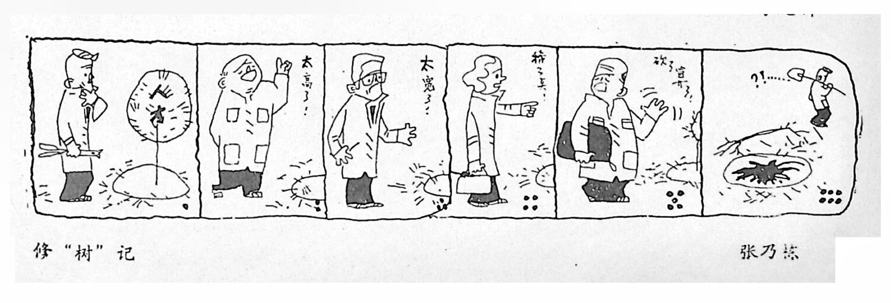

张乃栋 《人事》1985年第1期（总第1期），封三
修“树”记
Pruning the “Tree”
- Text in the drawing
- 人才 / 太高了！ / 太宽了！ / 斜了点！ / 砍了算了！ / ?!……
Talent / Too tall! / Too wide! / A bit crooked! / Just chop it down! / ?!… - Description
- Six panels: a gardener tends a bush whose branches spell “talent”; one visitor after another finds fault, until the last says to chop it down and only an empty hole is left.
- Note
- The fourth remark is hand-lettered and its first character is uncertain; “a bit crooked” (斜了点) is the most likely reading.
- Artist
- Zhang Naidong 张乃栋
- Published in
- 《人事》1985年第1期（总第1期）, inside back cover
- Themes
- Talent and its neglect · Envy of talent

Cite
Zhang Naidong, “修“树”记” [Pruning the “Tree”], Renshi (Personnel) 《人事》, 1985, no. 1, inside back cover.